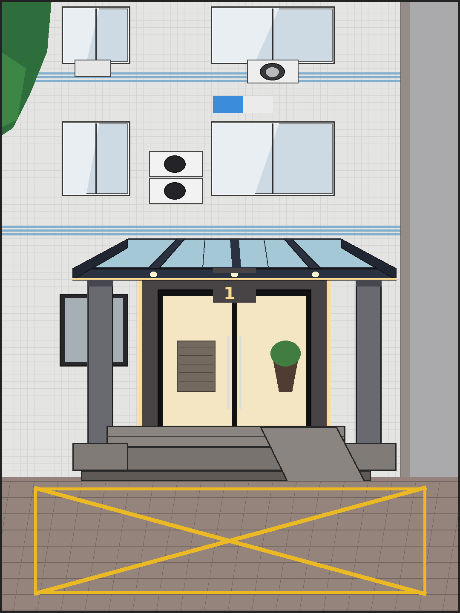

合并结果
结构来自图一（双柱 + 架空顶 + 双层地台 + 右侧斜坡 + 独立柱础），材质与内容跟图二（浅色马赛克立面、蓝色饰线、空调机位、蓝牌、暖光玻璃雨棚边灯、1栋门头、黄色禁停网格铺装）。已去掉偶发车辆与树木遮挡，保留干净的游戏背景可读性。

来自图一
- 双层地台 + 正面两级台阶
- 右侧无障碍斜坡向前延伸
- 两根方形立柱 + 独立柱础
- 平板顶 + 底部三道横梁透视
跟图二
- 立面 tile / 窗位 / 空调 / 管道
- 深灰门套 + 暖色侧灯带 + 玻璃门
- 玻璃质感顶 + LED 灯带 + 筒灯
- 地面铺装 + 黄色网格线